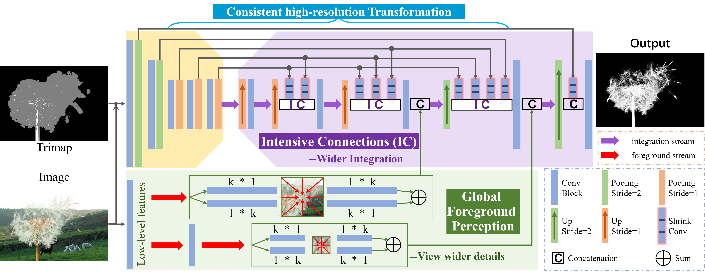
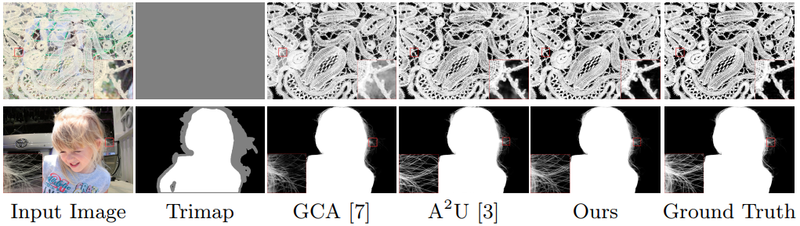
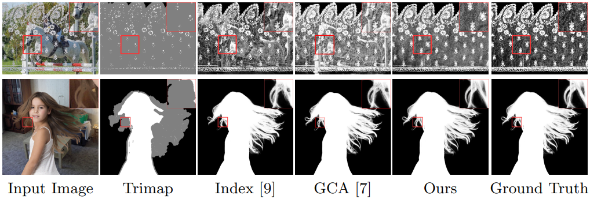

Abstract
This paper reviews recent deep-learning-based matting research and conceives our wider and higher motivation for image matting. Many approaches achieve alpha mattes with complex encoders to extract robust semantics, then resort to the U-net-like decoder to concatenate or fuse encoder features. However, image matting is essentially a pixel-wise regression, and the ideal situation is to perceive the maximum opacity correspondence from the input image. In this paper, we argue that the high-resolution feature representation, perception and communication are more crucial for matting accuracy. Therefore, we propose an Intensive Integration and Global Foreground Perception network (I2GFP) to integrate wider and higher feature streams. Wider means we combine intensive features in each decoder stage, while higher suggests we retain high-resolution intermediate features and perceive large-scale foreground appearance. Our motivation sacrifices model depth for a significant performance promotion. We perform extensive experiments to prove the proposed I2GFP model, and state-of-the-art results can be achieved on different public datasets.
Method
The overall architecture of the proposed Intensive Integration and Global Foreground Perception network (I2GFP). We employ simple backbone to extract necessary semantics and utilize intensive connections to integrate different-level features. The global foreground perception can capture rich appearances to complement details.
Comparisons on Public Datasets
The visual comparisons on the Adobe Composition-1k.
The visual comparisons on the Distinctions-646.